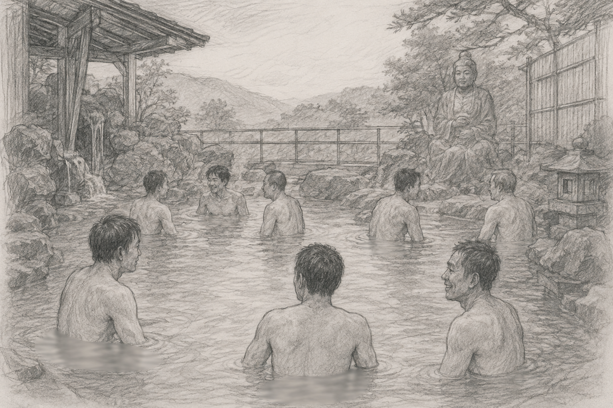

So far, we’ve been discussing how life in Japan thrives on distance — a tray that separates the buyer and seller or through a spatial distance in public spaces. Then there is ONSEN, the one glorious exception to this rule.
My first onsen experience was in Shimoda, the town where Commodore Perry once landed and forced the Japanese to the world. After a tiring cycle trip in the peninsula, my friend told me about an ONSEN with 400 years legacy. Failing to understand the meaning, I googled it and said no thank you — if the Japanese won’t make small talk with me clothed, I am not risking for a naked hot bath-tub introduction.
He convinced me anyway, promising I could always retreat if I felt too odd. We paid 1200 yen each and were handed a single small towel to “hide our dignity”. Was that towel enough!!?? Little did we know that even that towel is only allowed to be kept on top of your head.
Somehow, I managed to shed all the clothes and get to the rather dimly lit place with a lot of chatter and shimmer. This time, I was oddly the braver one — my friend who had shown remarkable courage settled somewhere far away from me. Nudity, yeah, is a great equalizer and a better repellent. Ha Ha.
Wooden railings and stone statues. After 5 mints of struggle, I managed to dip fully inside that boiling water. After about 15 minutes, I started feeling nice. One Japanese man actually attempted broken English conversation with me. Finally, contact! But naturally he got a better company and left – strangely content. After about 30 minutes you would start feeling sweat in your head. Profusely. That is what is wanted. And theoretically, I’m done, but I explored different places and poses inside that ONSEN.
As per Japan’s Hot Spring Law, a natural spring heated by geothermal fire with temperature 25°C and carrying at least 19 specified minerals will earn the title ONSEN. It purifies the skin, muscle.. soul, what not. Some of them are more than 1000+ years, used by the samurai themselves. What attracted me was the concept of “hadaka no tsukiai” , — the naked communication culture. The idea that : once clothes are gone, so are your titles, your status, your ego, and you open up.
This turned out to be one of my best experiences in Japan. Within a year, I had been to Onsens in Nagoya, Gifu, Nagano, Fukushima, Sendei, Odawara, a detail that I remember before booking rooms. ”Is there an Onsen nearby??!!”. I even went to an onsen in a far off land somewhere in Hokkaido, in some national park, in an Island also etc... I don’t even remember the places but village name with “Onsen” stuck right after it.
Yeah, I have upgraded from being shy to shameless…lol.